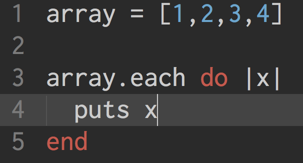
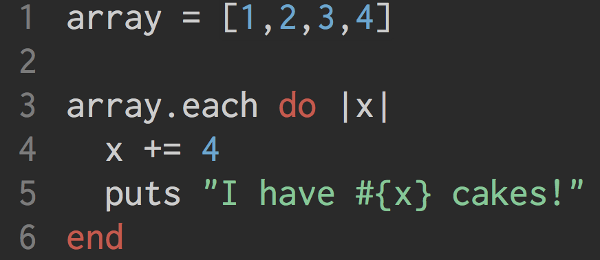
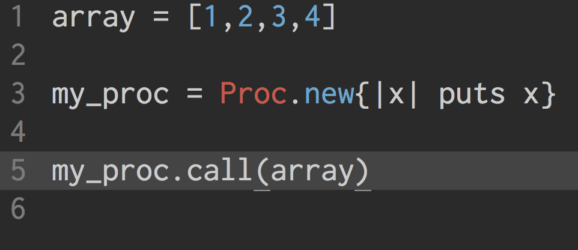
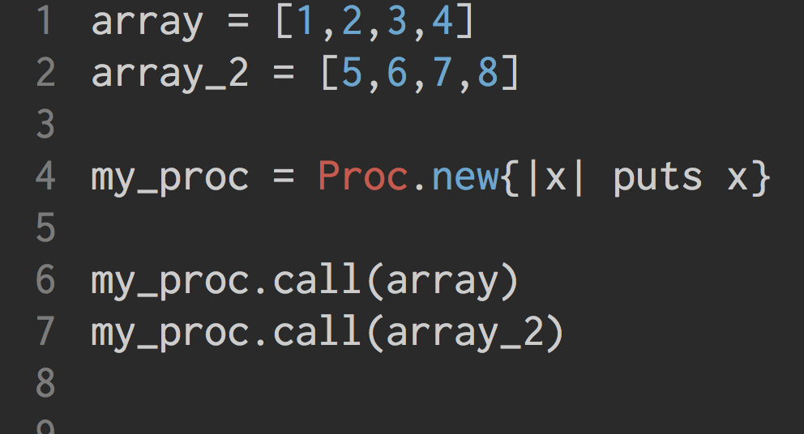
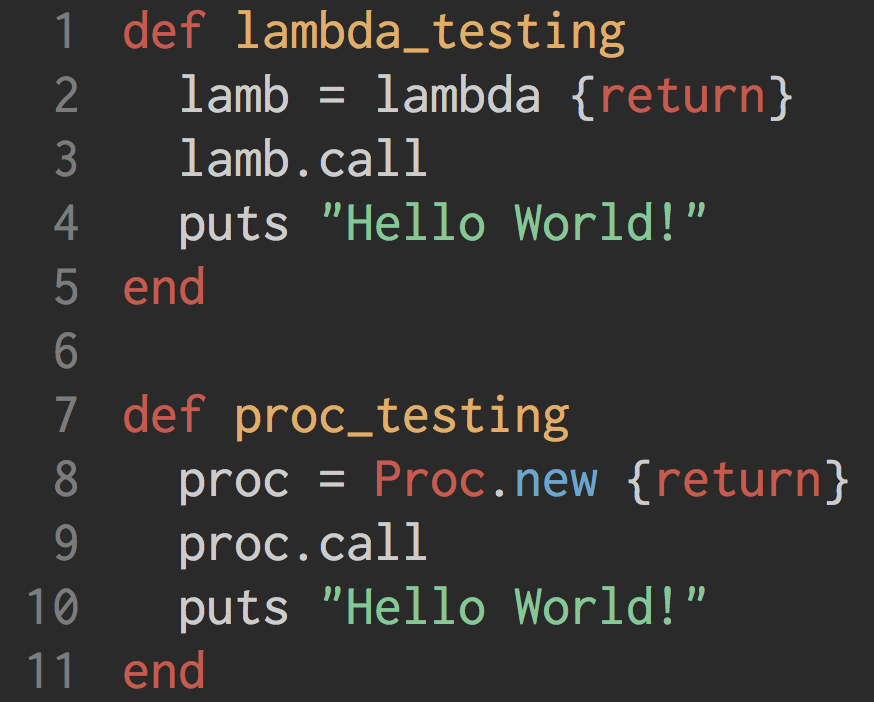

What exactly are any of them? At this point in the adventure that is DBC, I could tell you what a block is. I could tell you how to use a block- we do all the time, but not neccisarly do we know that. They just kinda make sense. But looking at Procs and Lambdas, then I'm not toally sure. I don't think we've used them, but they sound awfully framiliar. But we've not used them... So I had to look it up.
So what is a block, and why do I say that we've used them.. because we have. Just without knowing it. Simply put, it's everything that could be found between a do and an end. For example-
The "puts x" is the block. In another example -
Everything between the do and the end is still the block. It doesn't matter how long or how short it is. It's still a block.
Now that's kinda a funny word, and one that you don't see every day. What is a proc? It sounds like a block.. and in a way it is. It's really just a block that is reusable, and that is an object. For instance-
This does the same thing as the first block that was presented. And it outputs the same thing. So the question then becomes, why would one ever use a proc when blocks make sense? Because they can be used more then once!-
If we had wanted to do the same thing to both array and array_2 using only blocs, we would have to retype the whole thing. Now this isn't a huge deal when you're dealing with a simple statement, much like we are. However, when they get longer, it can be nice to only have to type it all out, and thus store it, once.
A lambda is an extension of the proc. It IS a proc. But it also differs from a "regular" proc in a few ways. For starters, it cares about how many arguments it gets passed. If you had a proc that accepts 1 argument, and you send it 2, it runs with the first and kinda forgets that the second is there. A lambda would raise an error. Say you had the same proc, and this time you pass it no arguments. It will return nil. If you run a lambda that way, you'll raise an error.
The other thing that makes them differ is a little harder to understand, and that is how each deal with the word return. A proc, when return is used, will jump to the next statement outside of the METHOD that calls the proc. A lambda will jump to the next statement outside of the lambda code. For instance -
In the proc, you'll never see the "Hello World!"- it jumps out of the method. You will, however, see it with the lambda, as it only jumps outside the lambda itself.